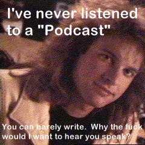

Podcasting. Perhaps you’ve heard of it, perhaps you haven’t. For the latter, here is a succinct definition: Podcasting is a way of publishing sound files to the Internet, allowing users to subscribe to a feed and receive new audio files automatically. (definition from the Wikipedia). Having been asked many times over the years to explain the mystery and voodoo that is the weblog, I offer to the humble reader this treatise on podcasting.
“Podcasting” — I’ve been hearing this term for some time, specifically starting with Warren Ellis’ Bad Signal list. Ellis, a prolific science-fiction/futurist/whatever writer is always on the lookout for the newest of the new trends in communications, and he picked up the term sometime last year. He had this to say about it:
“Podcasting is a very interesting idea.
You record your own little radio
show to mp3, release it off your
website as a RSS enclosure, and a
little bit of software like iPodder
sucks it on to your computer for
shunting into your mp3 player.
Podcasting is just a few months old,
and most of it is very bad — but
there weren’t any good blogs in
the first six months of blogging,
either. This could be very interesting.”
{more}
While the term podcasting is reasonably new (and while it’s usage has doubled/tripled as of late), and while it could have a very bright and interesting future, don’t be fooled: this technology and this very idea have been around almost since the dawn of the Internet — perhaps even time. It’s nothing new, but as much as anything on the Intarweb, you can sprinkle an idea with technology-dust, slap a new name on it and web-denizens will lap it up.
The analogues between podcasting and the now-debunked mystery of the weblog are many and similar. A weblog ain’t nothing but a diary, but on the Internet! It’s just as simple as that. Do not be fooled by the high-wizardry of the Internet. There is still some dude on his couch banging out his latest political commentary or his recipe for chicken sauce piquant. Anyone can do it. Back in the days before the glorious intarweb, this was limited to those with access either to a mailing list or the school newspaper. With barriers such as those, only the determined were published, and fewer were even read.
In the same way, podcasting has been around for years. In the days before there was an FCC, all you needed was a radio to get on the air. Crank up your spark-gap transmitter and read off your recipes and/or political commentary! The FCC decided that it was better to save the airwaves for emergencys, radio payola and advertisements, so away that went. How is a man to rouse rabble or read his manic break-up poetry now?! Tell me that, Uncle Sam! If only there was some medium with no boundaries or limits…
Well, along comes the Internet. Complete and total unfettered global access to any and all with a computer. Imagine it! A thousand thousand thousand political hacks, diary writers and wannabe Yeats’ publishing at the same time! Well, that future is here and now — we call it blogging. Take a vast and vastly mediocre group of publishers, and give them an infinite media, add splash of technology, and voila! Total information overload.
Whereas weblogs are nothing but words and the occassional picture, podcasting is the next natural step (just add audio). It’s not like you couldn’t cast a pod before, but now it’s just easier. Before there was such a thing as MP3 (compressed audio) it was unfeasable to put up a 30-minute 300 meg radio show on the web. Even then — did you really expect people to download and listen to your drivel whilst chained to their desks? But then — oh, then — the iPod! The portable, digital music vault! Combine small audio files, the increase in bandwidth for the average user, the availability of portable music devices, and man’s insatiable desire to be heard and there you have it — podcasting.
I really wish there was a word to describe the phenomenon of re-labeling something, but for the Internet. It was sort of done with the “e” and “i”, like “e-Commerce” and “i-Pod”, but “podcasting” and “weblog” are of a different sort. They are not technologies, per se, but really re-inventions of current, perhaps even mundane, activities. Prestiwebitating, perhaps, I don’t know. Perhaps I’m not looking far enough ahead. (What? You mean like vidblogging or holocasting? YES — that far!)
Do not fear the Internet. It is only there to confuse and annoy.
Further: Come One, Come All: The Rise of Podcasting at NPR.org. Also, the earliest mention of “podcast” on Google Groups appears to be October 2004, linked to this article. This American Life has been podcasting for years and years now, releasing each of it’s episodes (webisodes?) the week after they air on NPR. Finally, that photo of ex-MTV VJ Adam Curry up there is due to his involvement with the genesis of podcasting as a syndicatable/auto-updating thing (see his Adam Curry’s Wikipedia article).


{kind=link}